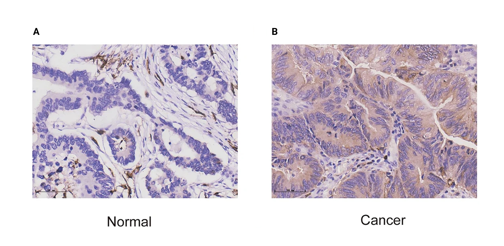
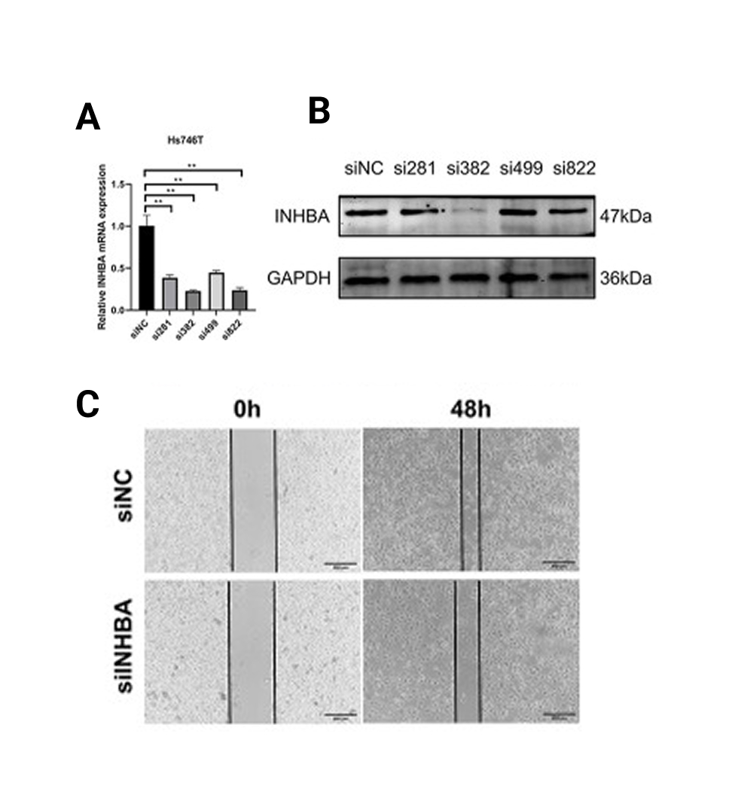
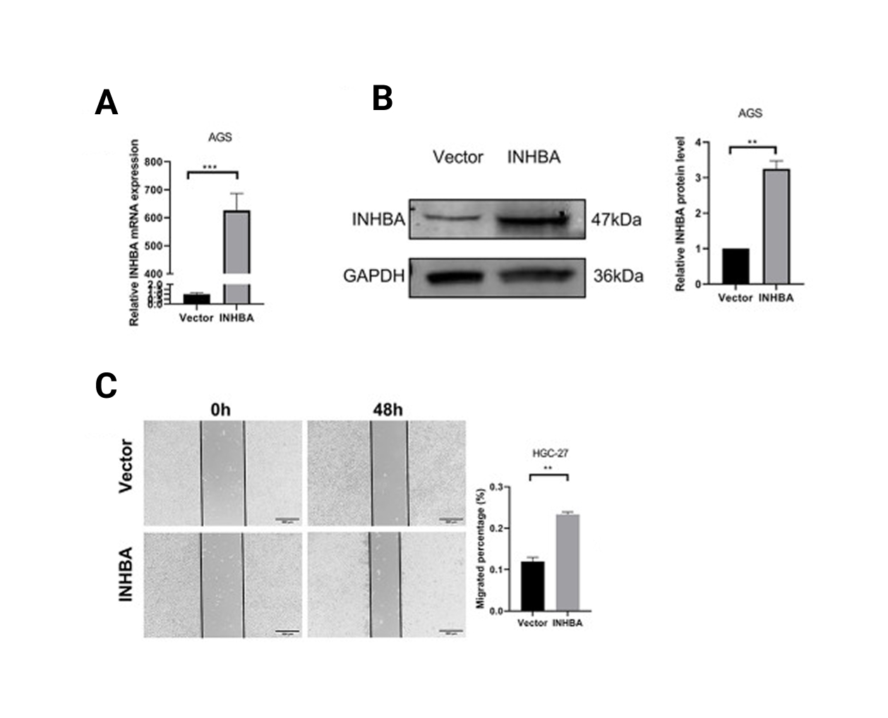
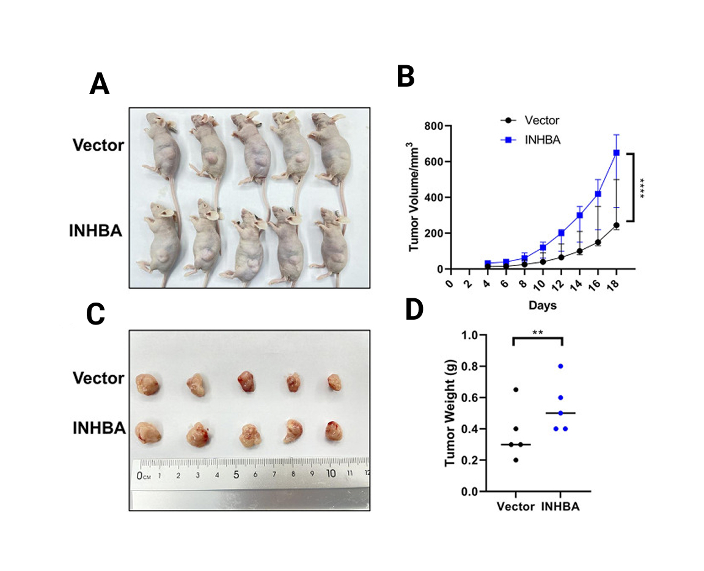
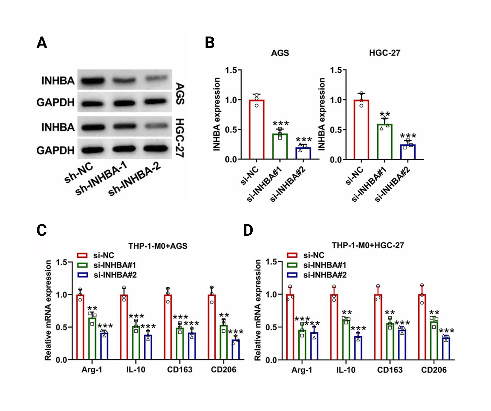
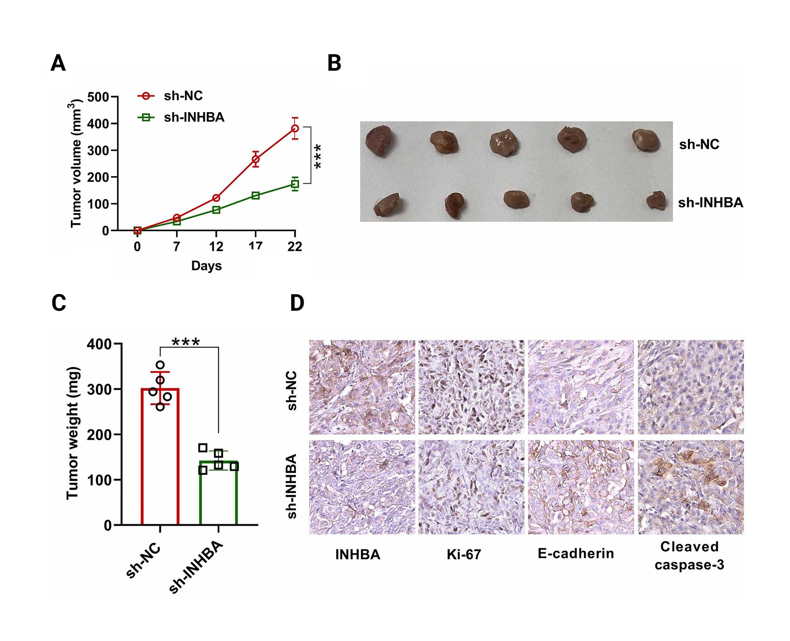

What These Results Mean
The through-line
INHBA is strongly upregulated in gastric tumour tissue (log₂FC ≈ 3.5, DESeq2), replicates in an independent microarray cohort, and splits five-year survival (log-rank p = 0.023). Ranking genes by their correlation with INHBA puts epithelial–mesenchymal transition at the top (NES = 3.76) and tumour-cell proliferation programs at the bottom. Single-cell data then locates the gene: it is transcribed by fibroblasts, induced 13.4-fold in tumour tissue, and essentially absent from the malignant epithelium that dominates a bulk sample. The bulk signal and the single-cell signal are the same phenomenon measured at two resolutions — a bulk sample high in INHBA is a sample rich in activated stroma.
Why the anti-correlation with proliferation is the informative part
The negative correlation with E2F targets, MYC targets and oxidative phosphorylation initially looks like a contradiction: a gene that predicts worse outcome ought, naively, to track with proliferation. Reading it as a composition effect resolves it without any additional assumption. It also makes a falsifiable prediction — the association should weaken or vanish once tumour purity is included as a covariate, because the signal is carried by stromal content rather than by a state inside the cancer cell. That test has not been run here, and it is the single most useful next analysis.
Sender and receiver are different cells
Activin A is a secreted ligand, so the cell that transcribes INHBA need not be the cell that responds to it. In tumour tissue the type I receptor ACVR1B tracks epithelial lineages (13.8% of malignant cells) rather than immune ones, while fibroblasts carry ACVR1 and TGFBR2 and show high SERPINE1, a direct SMAD2/3 target that reads out active rather than merely potential signalling. The shape of the model is therefore a fibroblast-to-tumour paracrine axis alongside a fibroblast autocrine loop — which is what makes the gene interesting as a stromal target rather than a tumour-cell one.
What This Does Not Establish
- Not causality. Every result here is observational and cross-sectional. INHBA may drive stromal activation, be a marker of it, or both; nothing in this data distinguishes those. The perturbation experiments discussed below do establish that the pathway can drive the phenotype in model systems [2][3] — in cell lines, which is not the same as in a patient.
- Not protein-level signalling. Activin A is regulated post-transcriptionally and antagonised by follistatin. Transcript abundance is a proxy for ligand availability, not a measurement of it. Immunohistochemistry in an independent cohort [1] does confirm the protein rises with the transcript, but stains where the secreted ligand accumulates rather than which cell produced it.
- Not the same patients. The single-cell cohort is independent of TCGA-STAD. It explains the bulk result mechanistically; it does not re-derive it in the individuals where the survival association was measured.
- Not an independent survival claim. The Kaplan-Meier split is univariate. Cox adjustment for stage, age and molecular subtype is pending, and stage in particular is a plausible confounder for a stromal phenotype.
- Not tissue composition. Single-cell fractions reflect what dissociates and is captured. Fibroblasts and epithelium dissociate with different efficiency, so compartment percentages index tissue composition without equalling it — the tumour/normal contrast is the interpretable quantity, not the absolute rate.
Next Steps, Ordered by What Each Would Settle
- Purity- and stage-adjusted Cox model. Tests whether the prognostic signal is anything more than stromal content. This is the result that decides whether INHBA is a biomarker or a proxy.
- Deconvolve TCGA-STAD against the Kumar atlas. Brings both modalities into the same patients, and predicts that bulk INHBA tracks the estimated fibroblast fraction.
- Ligand–receptor inference (CellPhoneDB / CellChat). Checks the paracrine model against the receptor and SMAD-target expression reported in Module 6, rather than reading it off marker genes by eye.
- Spatial validation. The paracrine claim requires INHBA⁺ fibroblasts to sit physically adjacent to ACVR1B⁺ epithelium — something dissociated single-cell data cannot show at all.
INHBA is best read as a marker of activated tumour stroma rather than as a cancer-cell gene. That reframing is what makes the bulk results internally consistent, and it changes what the gene is useful for: as a therapeutic target it points at the fibroblast compartment and a paracrine axis, and as a biomarker its value depends entirely on whether it carries prognostic information beyond tumour purity and stage — which remains an open question, not a settled one.
What Independent Groups Have Shown
Everything on the Results page is computational and observational. It can show that INHBA is high, that the association replicates, that it tracks survival and EMT, and which cells transcribe it — but it cannot show that the gene does anything. Three published studies test it functionally. Read against this analysis they close that gap, and raise one question worth taking seriously.

Anti-INHBA staining in matched tissue. Normal mucosa (A) is largely counterstain-blue with only scattered brown signal; the tumour (B) carries strong, widespread cytoplasmic DAB across the glandular compartment. This is the protein-level counterpart of Module 1 — the upregulation seen in TCGA-STAD and replicated in GSE66229 is not a sequencing artefact, it reaches the protein.
Reproduced from Liu et al. 2023, Scientific Reports (CC BY 4.0).
One caution that matters for the argument below: immunohistochemistry localises accumulated protein. Activin A is secreted, so brown staining marks where the ligand ends up — deposited on and around epithelium — not which cell transcribed it. That distinction is precisely what Module 5 resolves, and it is why an IHC image showing signal "in the tumour" is not in conflict with a single-cell result placing the transcript in fibroblasts.

Four independent siRNAs lower INHBA in Hs746T (qPCR, and the 47 kDa band against 36 kDa GAPDH). In the scratch assay the knockdown monolayers have closed visibly less of the wound at 48 h than control.
Reproduced from Zhou et al. 2026, Oncology Research.

The reciprocal experiment. Transfected AGS cells reach roughly 600-fold INHBA mRNA and ~3.2× protein, and the migrated fraction in HGC-27 roughly doubles, 0.12 → 0.23. The effect tracks the direction of the manipulation rather than appearing only on loss.
Reproduced from Zhou et al. 2026, Oncology Research.

Subcutaneous xenografts in nude mice. By day 18 the INHBA-overexpressing tumours reach ≈650 mm³ against ≈240 mm³ for vector, and excised weight rises from ≈0.30 g to ≈0.50 g. The gene is not merely correlated with an aggressive state — supplying more of it produces one.
Reproduced from Zhou et al. 2026, Oncology Research.
This is the piece the present analysis cannot supply. Modules 1–3 establish that INHBA is high, replicated, associated with worse survival and co-expressed with EMT; all of that is observational. A bidirectional perturbation with a matching in vivo readout is what turns "associated with an invasive state" into "capable of producing one".

INHBA is knocked down in AGS and HGC-27 (A, B), and THP-1-derived M0 macrophages are co-cultured with them. All four M2 markers — Arg-1, IL-10, CD163, CD206 — fall with both siRNAs and in both cell lines (C, D). Activin A availability is changing what the macrophages become.
Reproduced from Zhang et al. 2025, Pathology – Research and Practice.

sh-INHBA tumours reach ≈175 mm³ against ≈380 mm³ at day 22, and weigh ≈140 mg against ≈300 mg. The stained sections carry the phenotype: Ki-67 down, E-cadherin restored, cleaved caspase-3 up. Losing INHBA makes these tumours less proliferative, more epithelial and more apoptotic.
Reproduced from Zhang et al. 2025, Pathology – Research and Practice.
Two things here line up with this project directly. The E-cadherin panel is EMT reversing on INHBA loss — the same programme Module 3 found INHBA co-varying with most strongly (NES = 3.76). And the macrophage result gives a role to the population Module 5 flagged as a constitutive INHBA source: macrophages sit near 18% positive in both tumour and normal tissue, so they are both a supplier of this ligand and, per this paper, a responder to it.
Source Versus Sufficiency
There is an apparent conflict between those experiments and this analysis, and it is worth stating plainly rather than leaving for a reader to notice.
All three functional studies manipulate INHBA inside gastric cancer cell lines — AGS, HGC-27, Hs746T — and get clean, dose-appropriate phenotypes. This project's single-cell result says the malignant epithelium is not a meaningful source of the transcript in patient tissue: 0.80% → 1.34% positive, not significant, while fibroblasts go 1.52% → 20.97%. Taken at face value those look incompatible.
They are not, because they answer different questions. A cell line has no stroma. A gastric cancer line in a dish has no cancer-associated fibroblast to supply activin A, so whatever it needs it must transcribe itself. That makes such a line an excellent test of whether the pathway can drive migration, proliferation and M2 polarisation, and a poor model of who supplies the ligand in a patient. The same applies to the xenografts: human tumour cells in an immunodeficient mouse recruit murine stroma and lack functional lymphocytes, so they establish that tumour-derived activin A is sufficient, not that it is the physiological source. And the immunohistochemistry stains secreted protein where it accumulates, which for a diffusible ligand is not the same question as which cell made it.
Activin A signalling is sufficient to produce the invasive, immune-remodelling phenotype — in both directions, in vitro and in vivo.
In actual patient tissue the ligand is supplied mostly by CAFs, with macrophages as a constitutive contributor and the epithelium carrying the receptor.
Two experiments would separate these cleanly: a CAF–tumour co-culture in which only the fibroblast compartment carries INHBA, testing whether stromal ligand reproduces the tumour-cell phenotype; and spatial transcriptomics placing INHBA transcript relative to ACVR1B-positive epithelium in intact tissue. Neither has been done here.
If the pathway is functional but the physiological source is stromal, then an intervention aimed at the tumour cell is aimed at the wrong compartment — and the question that matters becomes the one raised in Module 6: which patients, meaning the CAF-high, INHBA-high subgroup, rather than which molecule. That is the contribution this project makes to a story the three papers below had already started.
References
- [1] Liu F, Liu J, Shi X, Hu X, et al. Identification of INHBA as a potential biomarker for gastric cancer through a comprehensive analysis. Scientific Reports 2023;13(1). doi:10.1038/s41598-023-39784-1 · Open access, CC BY 4.0
- [2] Zhang F, Zhou C, Wang X, Liu Y, et al. INHBA, transcriptionally activated by SPI1, facilitates gastric cancer progression by inducing macrophage recruitment and M2 polarization via activating the TGF-β signaling to increase CCL2. Pathology – Research and Practice 2025;269:155920. doi:10.1016/j.prp.2025.155920
- [3] Zhou G, Zhang R, Nie L, Si Y, et al. INHBA promotes the progression of gastric cancer by activating MAPK signaling pathway via targeting ITGA6. Oncology Research 2026;34(3):1–10. doi:10.32604/or.2025.070333
Figure reuse. Panels above are reproduced from the cited papers for discussion, each credited beneath its caption. Reference [1] is open access under CC BY 4.0. Rights for the remaining panels rest with their publishers and have not been cleared here.